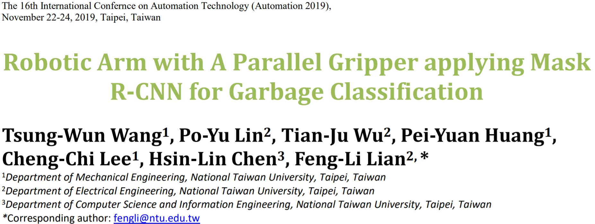
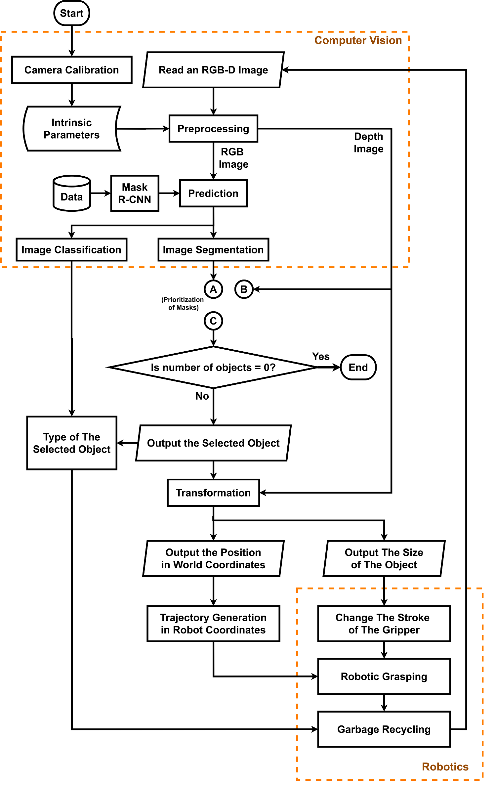
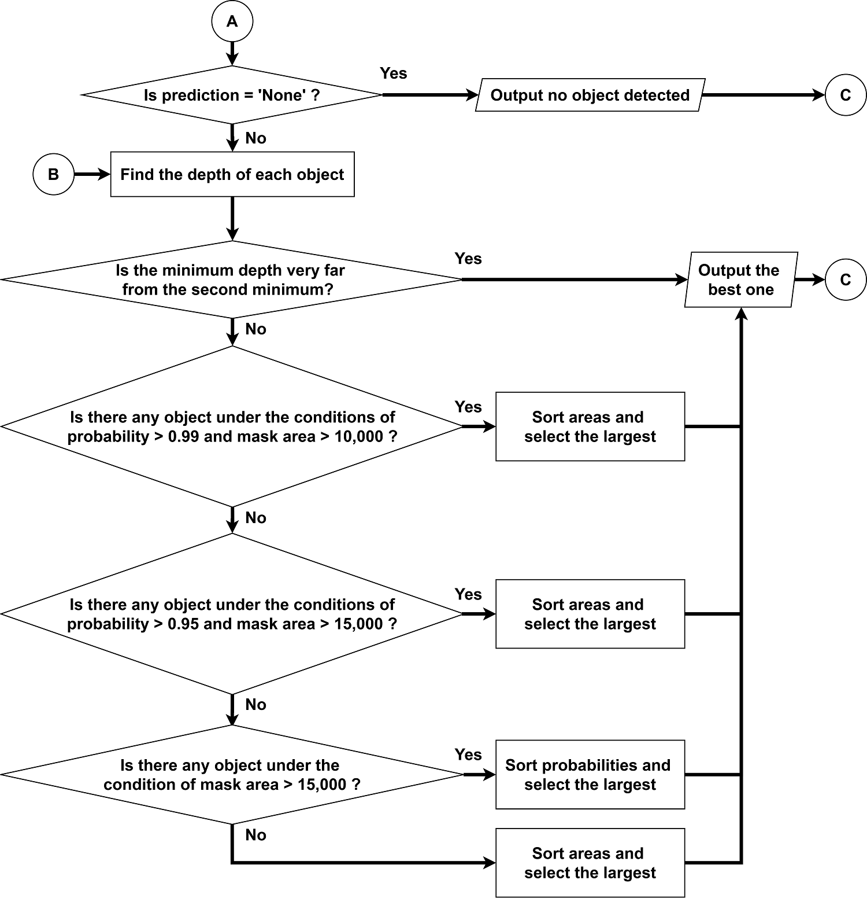
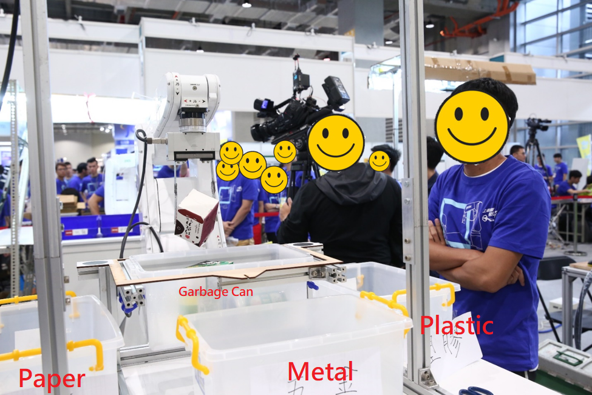
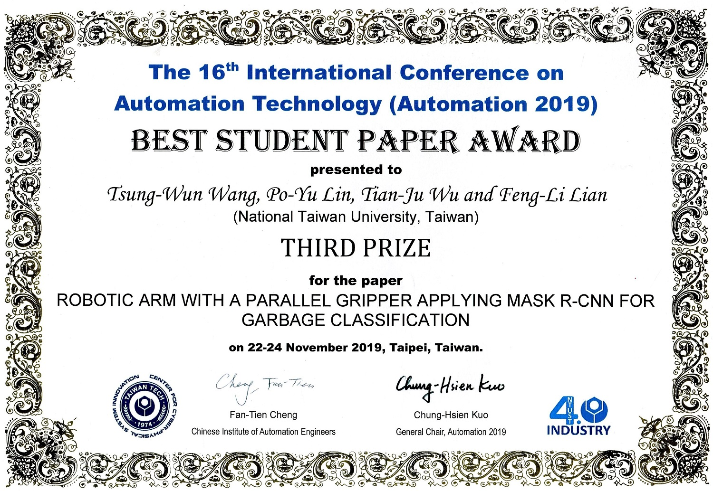

Publication

Abstract
In this paper, we present a novel vision-base robotic grasping system to enable a robotic arm with a parallel gripper to recycle reusable objects. This system can not only classify different types of objects, namely, paper, plastic, metal objects, but also predict the position of the selected object. Both camera images and deep learning techniques are key ingredient of the proposed solutions: the Kinect camera is used to capture RGB and depth images, and the Mask R-CNN model performs classification and finds a good segmentation mask, which must be the same as the shape of the selected object ideally. With the help of them, the parallel gripper finally throws the identified objects into their corresponding box successfully.
Problem-Solving Flowchart
{kind=link}

In fact, the results predicted by the Mask R-CNN model has some incomplete masks with small probabilities. Also, the parallel gripper can grip only one object each time, and it is easier to pick the upper object in the garbage can. In other words, we have to select only one upper object which overlaps the segmentation area predicted from the model. Therefore, to select the best object for each grasping, all of the masks predicted from the Mask R-CNN model should be prioritized. Once the best one is selected, the gripper will grip and recycle it.
{kind=link}

Result (1): Simulation

Where
the blue points are the places where two plates of the parallel gripper should grip;
the red point is the center of the two blue points.
Result (2): Robotic Grasping

Best Student Paper Award

References
[1] E. Klingbeil, D. Rao, B. Carpenter, V. Ganapathi, A. Y. Ng, and O. Khatib, “Grasping with application to an autonomous checkout robot,” in 2011 IEEE International Conference on Robotics and Automation, May 2011, pp. 2837–2844.
[2] H. A. Pierson and M. S. Gashler, “Deep learning in robotics: a review of recent research,” Advanced Robotics, vol. 31, no. 16, pp. 821–835, 2017.
[3] S. Kumra and C. Kanan, “Robotic grasp detection using deep convolutional neural networks,” in Proceedings of the IEEE International Conference on Intelligent Robotic and Systems, Dec. 2017, pp. 769-776.
[4] J. Yu, K. Weng, G. Liang, and G. Xie, “A visionbased robotic grasping system using deep learning for 3D object recognition and pose estimation,” in Proceedings of the IEEE International Conference Robotic and Biomimetics (ROBIO), Dec. 2013, pp. 1175–1180.
[5] C. Zhihong, Z. Hebin, W. Yanbo, L. Binyan, and L. Yu, “A vision-based robotic grasping system using deep learning for garbage sorting,” in 2017 36th Chinese Control Conference (CCC), July 2017, pp. 11223–11226.
[6] R. B. Falquete, D. C. Cavalieri, and F. G. Pereira, “An automatic object detection and location system applying Faster R-CNN,” in 2018 13th IEEE International Conference on Industry Applications, Nov. 2018, pp. 902-908.
[7] J. Redmon and A. Angelova, ”Real-time grasp detection using convolutional neural networks,” in IEEE International conference on Robotics and Automation, May 2015, pp. 1316–1322.
[8] R. Girshick, J. Donahue, T. Darrell, and J. Malik, “Rich feature hierarchies for accurate object detection and semantic segmentation,” in Proceedings of the 2014 IEEE Conference on Computer Vision and Pattern Recognition, Washington, DC, USA, Jun. 2014, pp. 580–587
[9] K. He, G. Gkioxari, P. Dollár, and R. Girshick, “Mask R-CNN,” in IEEE International Conference on Computer Vision (ICCV), Oct. 2017, pp. 2961- 2969.
Top of Page
Tsung-Wun Wang
(+886) 975-398-879 | twwang97@gmail.com
Taipei, Taiwan